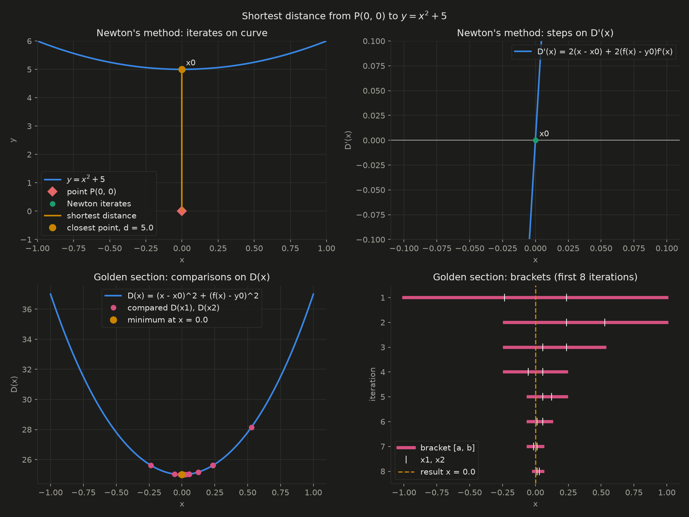
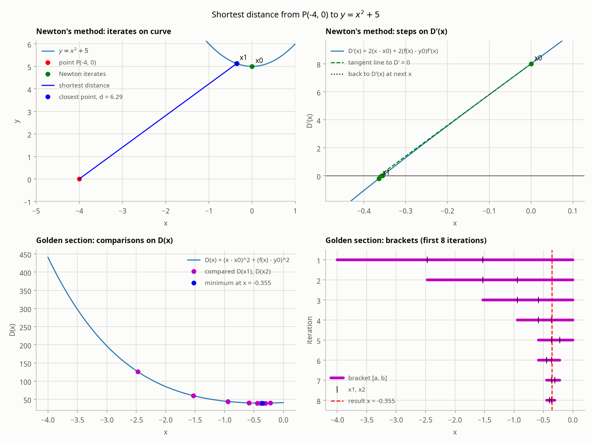
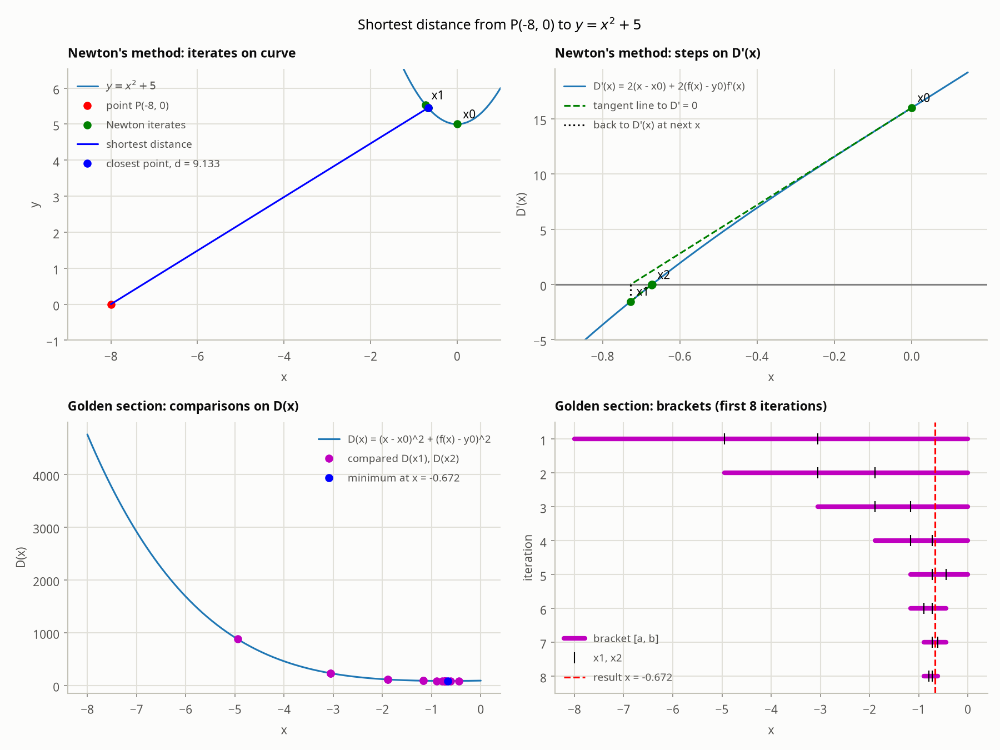
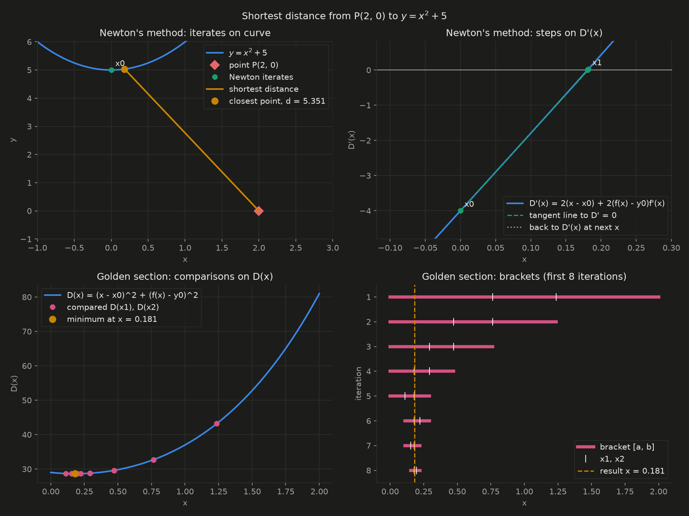
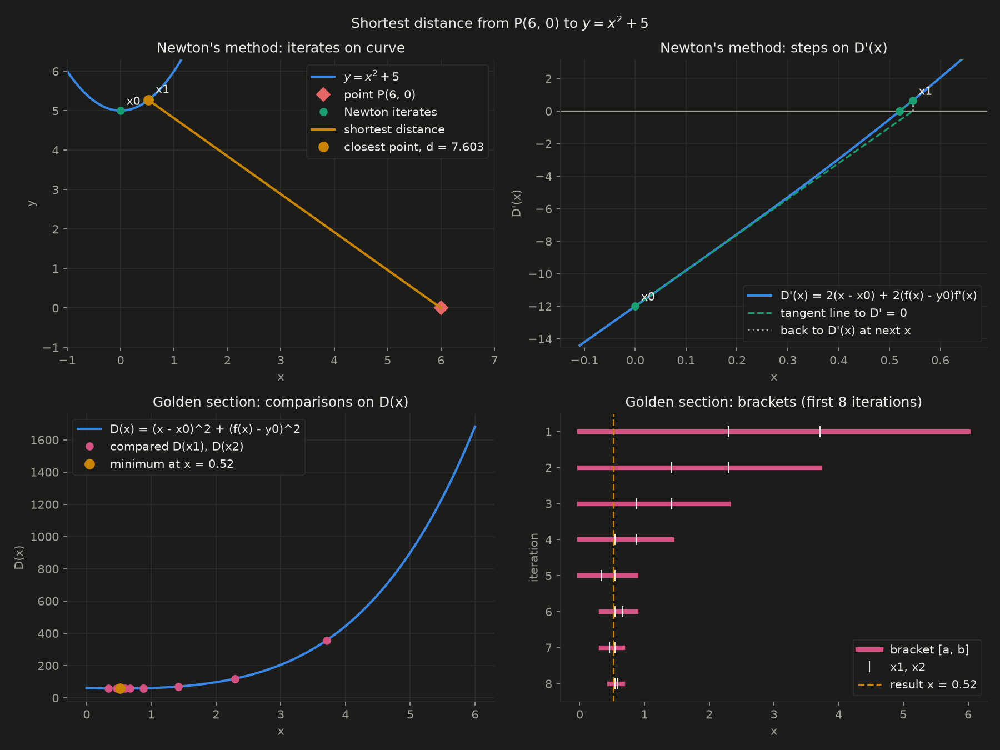
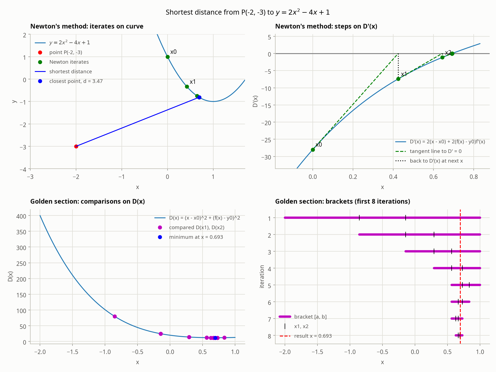
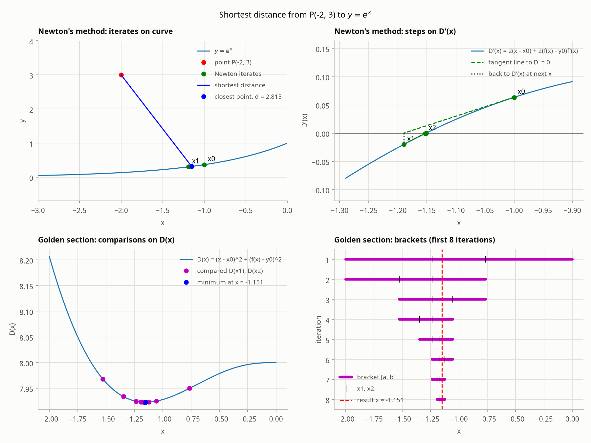
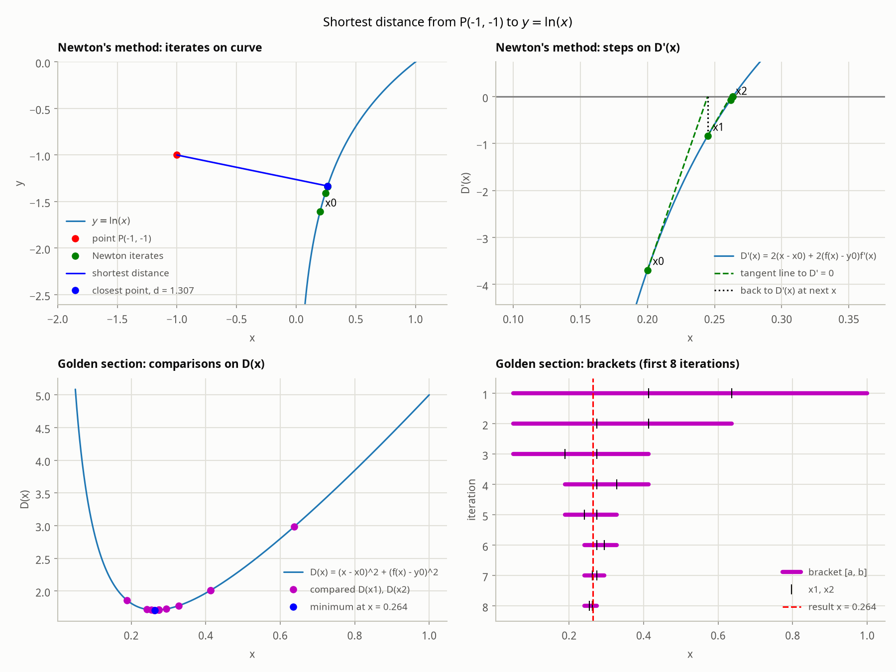
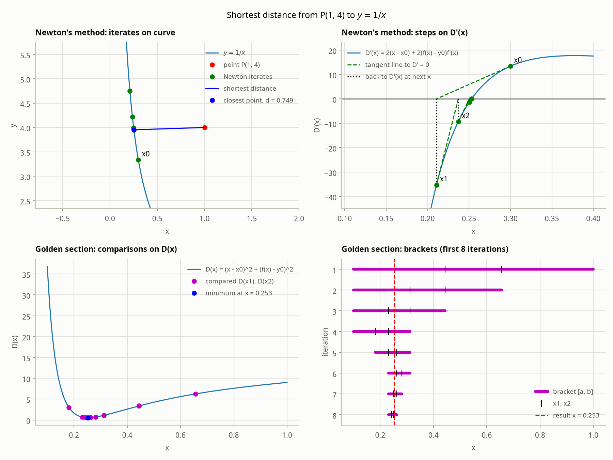
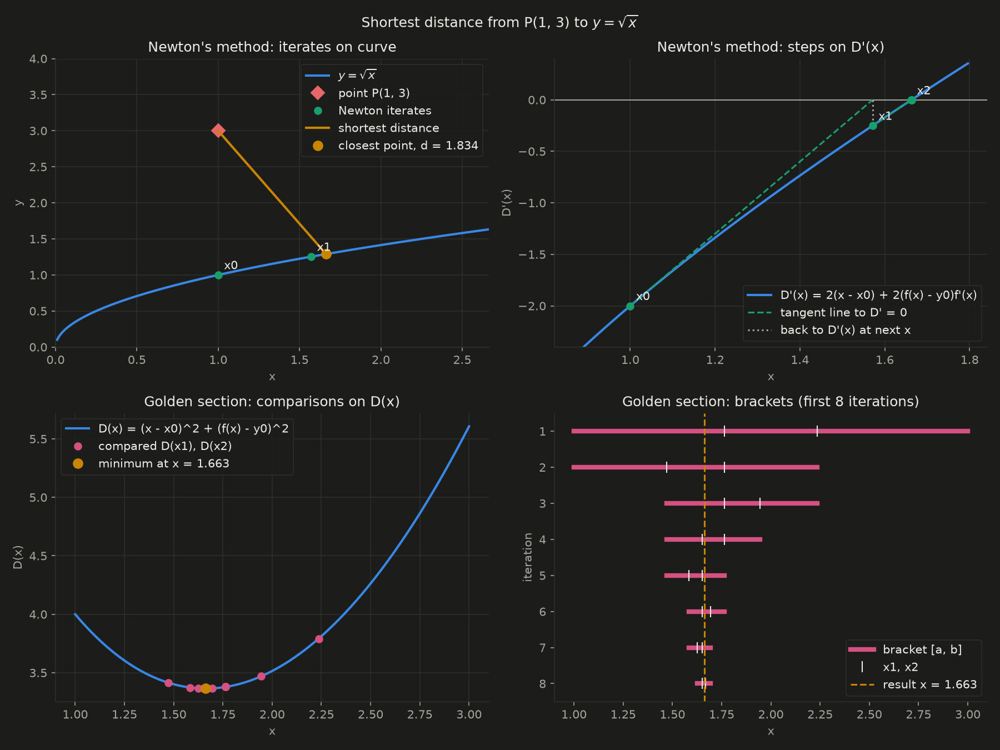

Assignment 1
Distance from a point to a function, and fitting to an equation
Part 1: Shortest distance from a point to a function
Setup
For a point \((x_0, y_0)\) and a curve \(y = f(x)\), minimize the squared distance
$$D(x) = (x - x_0)^2 + (f(x) - y_0)^2$$Analytical solution
$$D'(x) = 2(x - x_0) + 2\big(f(x) - y_0\big)f'(x) = 0$$For \(y = x^2 + 5\) and points of the form \((x_0, 0)\), this becomes the cubic
$$2x^3 + 11x - x_0 = 0$$Newton-Raphson
$$x_{k+1} = x_k - \frac{D'(x_k)}{D''(x_k)}, \qquad D''(x) = 2 + 2f'(x)^2 + 2\big(f(x) - y_0\big)f''(x)$$Golden section search
Results for \(y = x^2 + 5\)
| Point | Closest point | Distance | Newton steps | Golden section iterations |
|---|---|---|---|---|
| (0, 0) | (0.000, 5.000) | 5.000 | 0 | 35 |
| (−4, 0) | (−0.355, 5.126) | 6.290 | 3 | 37 |
| (−8, 0) | (−0.672, 5.452) | 9.133 | 4 | 38 |
| (2, 0) | (0.181, 5.033) | 5.351 | 3 | 35 |
| (6, 0) | (0.520, 5.270) | 7.603 | 3 | 38 |





Other parabolas

Non-polynomial functions
{kind=link}

{kind=link}

{kind=link}

{kind=link}

Part 2: Fitting to an equation
Points: \((0, 0.5), (2, 3.5), (1, 1.5), (3, 7.5)\)